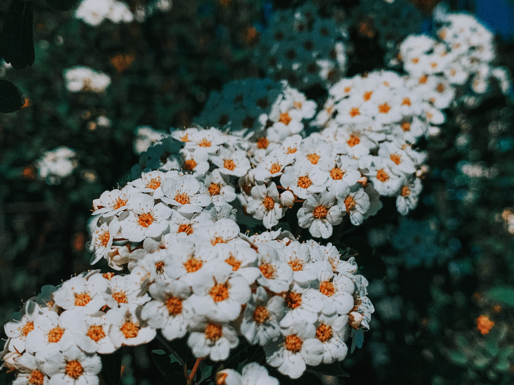
×

Barpezmi
Përdorimi: Kundër artritisit, astmës, hemorroideve, në përmirësimin e oreksit kundër gazrave në organet e tretjes etj
|
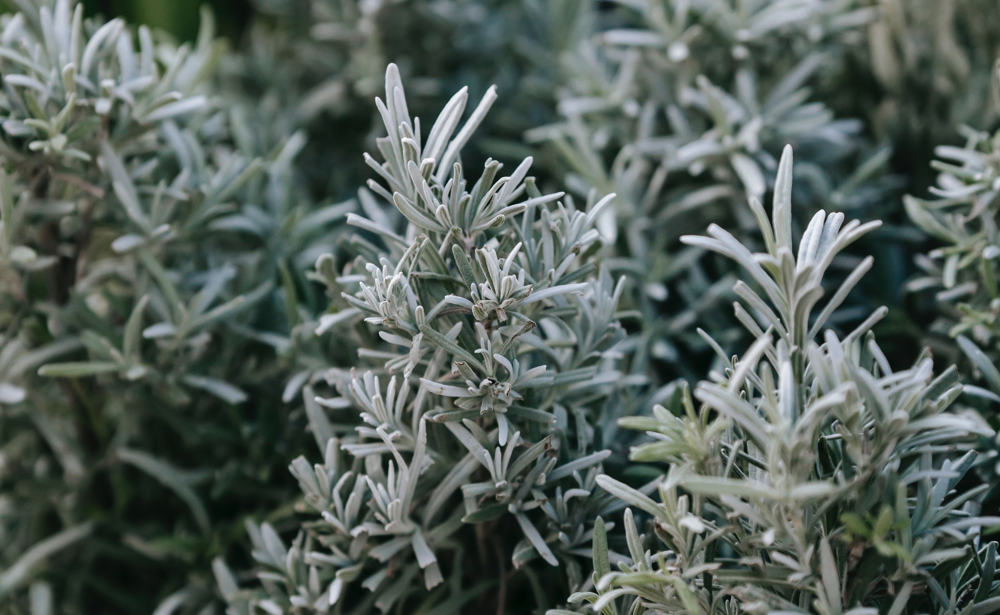
×

Pelini
Përdorimi: Tradicionalisht përdoret për stimulim të oreksit, kundër të thatit në lukth
dhe në zorrë. Përdoret edhe për shërimin e sëmundjeve lokale të lëkurës
|

×

Rodhëza
Përdorimi: Tradicionalisht është përdorë për ndaljen e gjakderdhjes, kundër diarresë,
shërimit të plagëve, veshkave, reumatizmit dhe artritisit.
|
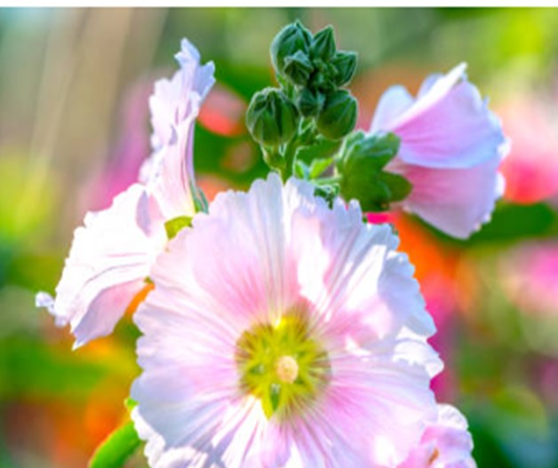
×

Mullanja mjekësore
Përdorimi: Tradicionalisht është përdor kundër kollitjes, ftohjes, ulcerave, inflamacionit
të gojës, të fytit dhe të mushkërive.
|
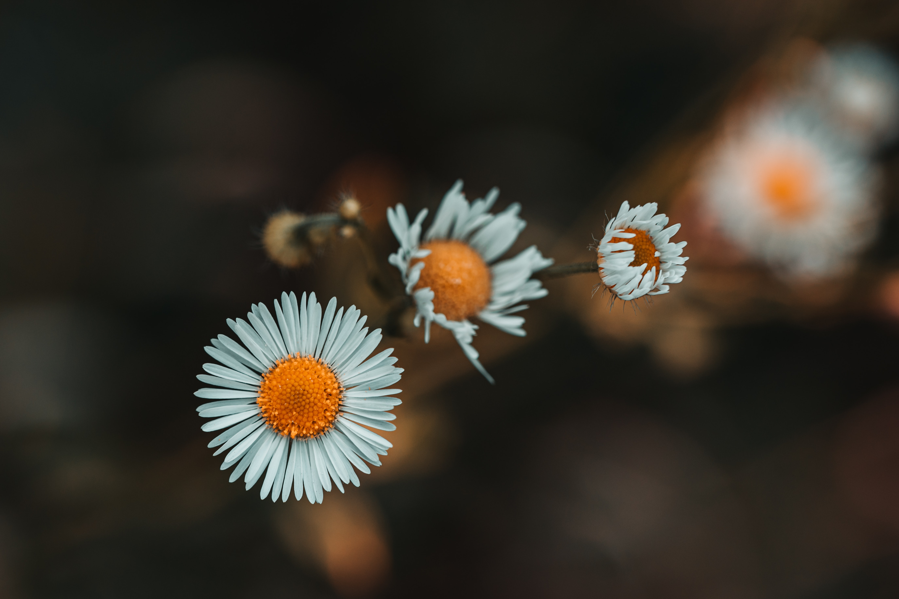
Luleshqerre,
Përdorimi: Forcon prostatën, pastron gjakun dhe mushkëritë, shëron lëndimet e brendshme
dhe lëkurore.
|
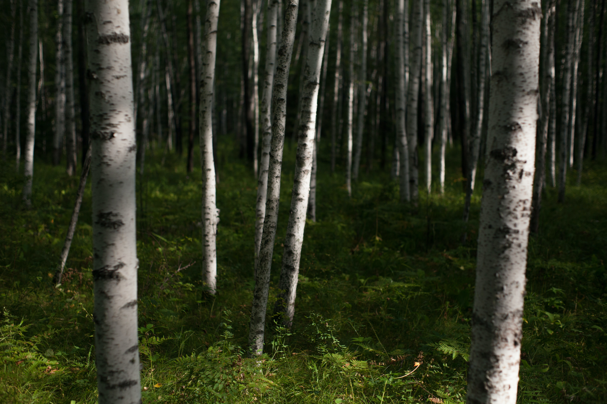
Mështekna
Përdorimi: Gjethet përdoren në trajtimin e infeksioneve të rrugëve urinare dhe si diuretik
në raste të sëmundjeve reumatizmale. Lëngu (vaj) përdoret kundër ekzemave,etj.
|
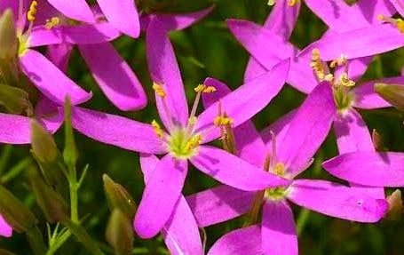
Kantarion
Përdorimi: Tradicionalisht është përdorë herba kundër etheve, sëmundjeve të organeve
tretëse, rrugëve urinare, pastrimit të gjakut etj.
|
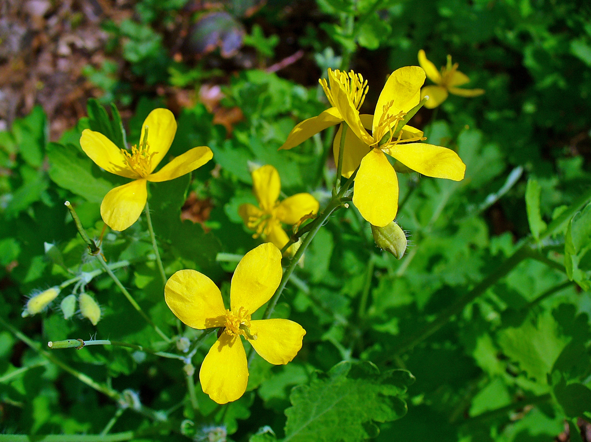
Latrapeci
Përdorimi: Tradicionalisht është përdorë kundër lythave dhe sëmudjeve tjera të lëkurës.
|
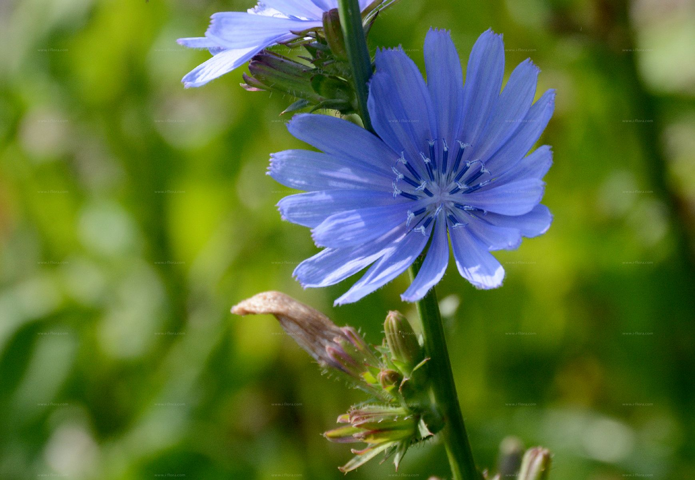
Cikore
Përdorimi: Tradicionalisht është përdorë kundër gurëve në mëshikëzën dhe në veshka,
në pastrimin e gjakut dhe kundër reumatizmit.
|
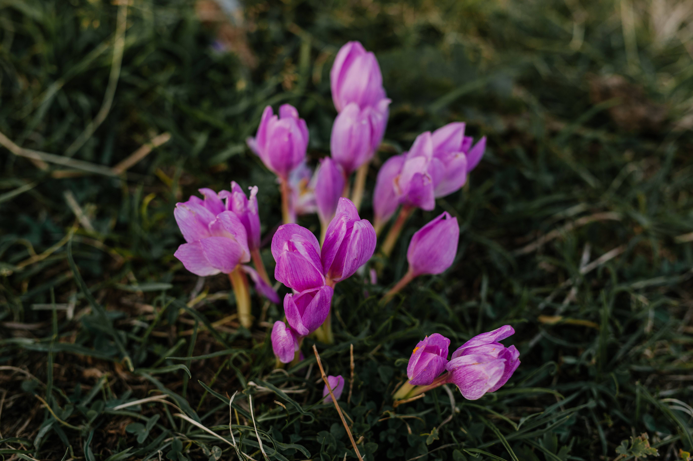
Xhërrokulli vjeshtor
Përdorimi: Tradicionalisht është përdorë kundër zjarmisë dhe alergjisë.
|
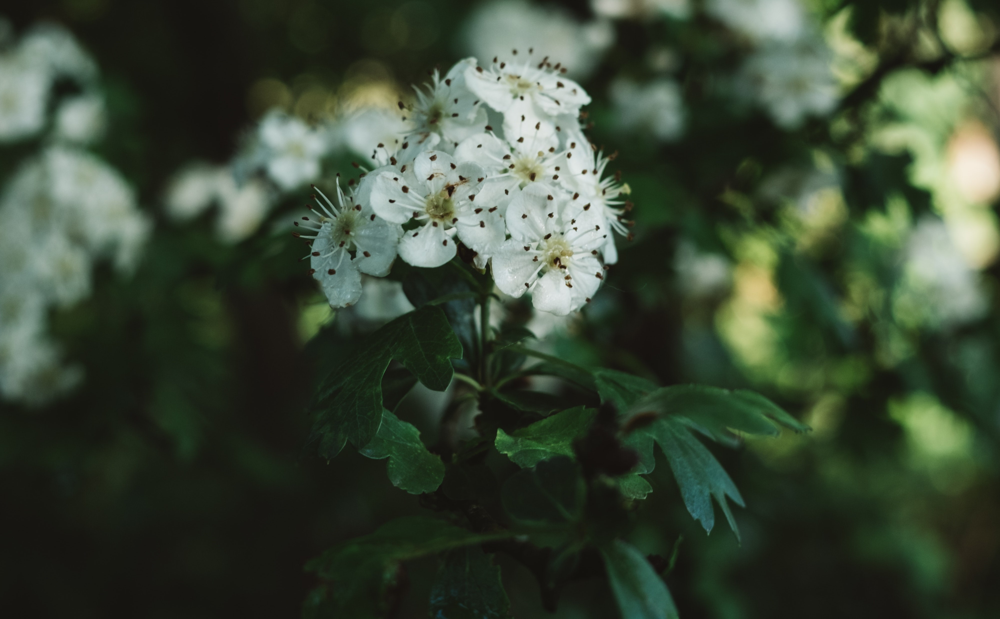
Murrizi
Përdorimi: Produktet e murrizit pëdoren për shërimin e sëmundjeve të zemrës dhe
insuficiencës kardiake (NYHA shkalla I dhe II).
|
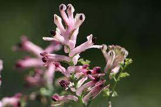
Lulepëllumbi mjekësor
Përdorimi: Përdoret në shërimin e sëmundjeve të organeve të tretjes, si diuretik
dhe në shërimin e psoriazës dhe ekzemave.
|
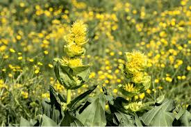
Sanza
Përdorimi: Rrënjët e sanëzës përdoren si tonik, rritës të oreksit, kundër anaureksisë dhe kundër sëmundjeve të lukthit.
|
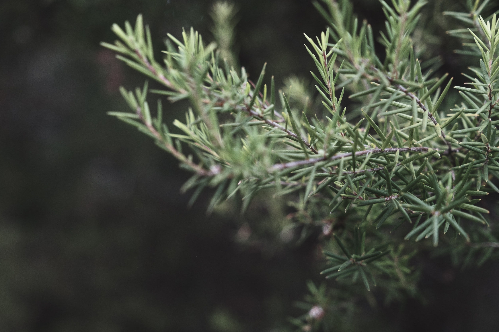
Dëllinja e zezë
Përdorimi: Përmban vajra eterike që përdoren në shërimin e organeve urinare si antiseptik, në përmirësimin e qarkullimit të gjakut etj
|
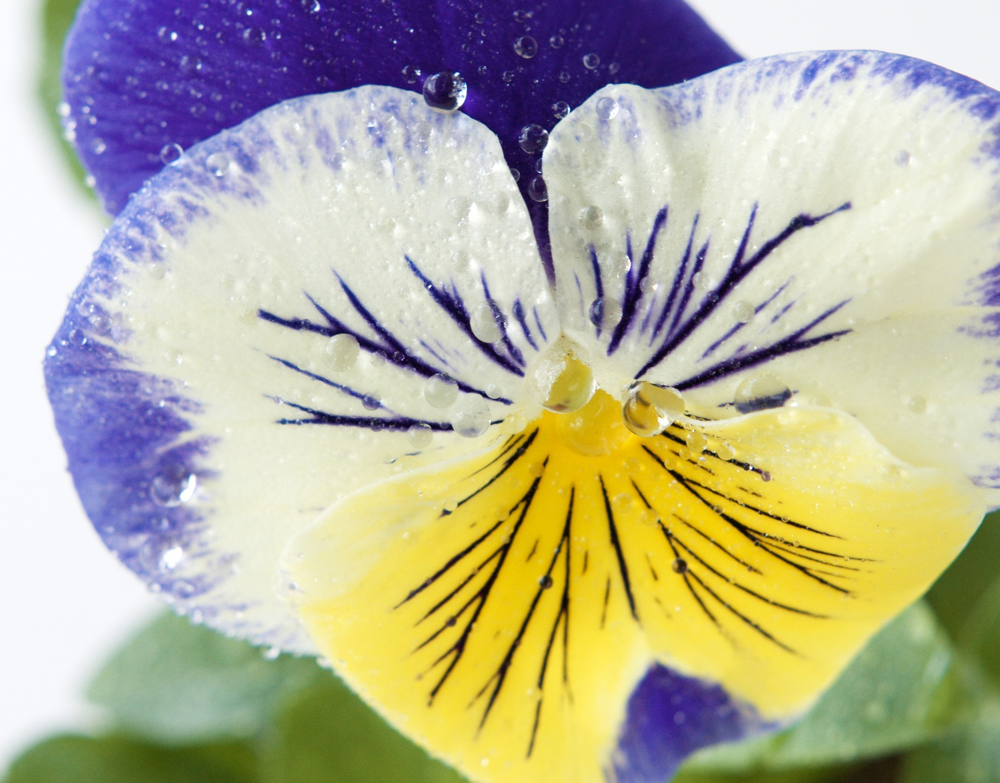
Manushaja trengjyrëshe
Përdorimi: Përdoret në trajtimin e sëmundjeve të lëkurës (ekzemave dhe akneve) dhe bronkitisit.
|
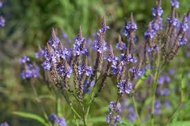
Sporisi mjekësor
Përdorimi: Përdoret kundër migrenës, nervozave, si diuretik kundër etheve, astmës
inflamacioneve dhe si e freskët në trajtimin e epilepsisë dhe çrregullimeve mendore.
|
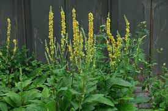
Meliloti mjekësor
Përdorimi: Përdoret për shërimin e hemorroideve, venave të zgjeruara etj.
|
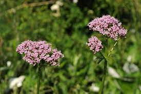
Rigoni
Përdorimi: Përdoret kundër ftohjes dhe gripit,bronkitisit etj.
|
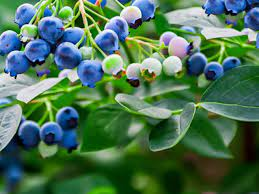
Kulumbria
Përdorimi: Frutat përdoren kundër inflamacioneve në trajtimin e gojës, fytit, rrugëve të frymëmarrjes; pastaj forcon lukthin,
rritë oreksin dhe largon ngërçet në bark.
|
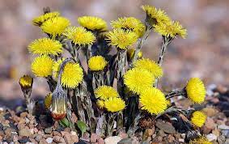
Thundërmushka
Përdorimi: Gjethet përdoren kundër kollit,bronkitisit, astmës, sëmundjeve të mushkërive,
pastrimit të gjakut etj.
|
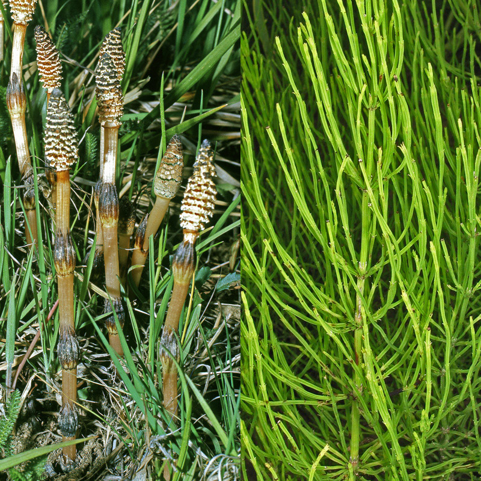
lorem.
Përdorimi: Përdoret si diuretik në infeksionet
e traktit urinar, i lufton bakteret, pastron veshkat
etj.
|
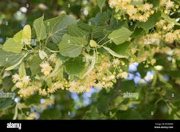
Bliri gjethevogël
Përdorimi: Çaji i blirit mundëson djersitjen gjatë ftohjes dhe forcon organizmin. Veprim
gati të njëjtë kanë edhe lulet e llojeve të tjera të blirit.
|
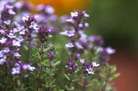
Krasta e zakonshme
Përdorimi: Bimë që pëdoret mjaft kundër ftohjes dhe inflamacioneve të rrugëve të frymëmarrjes.
|

Luleshurdha mjekësore
Përdorimi: Gjethet e freskëta kanë vitaminë C, materie minerale etj. dhe përdoren si sallatë
Rrënjët kanë gjithashtu shumë materie dhe ndihmojnë punën e veshkave, mëlçisë etj.
|
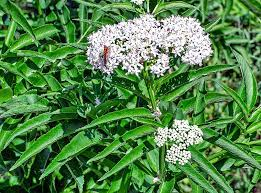
Shtogu
Përdorimi:Përdoret si çaj kundër djersitjes, pastrimit të rrugëve urinare, lehtësimit të kollit etj
|
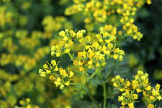
Rutë
Përdorimi: Përdoret kundër epilepsisë, marramendjes, kthimit të oreksit, kokëdhimbjes,
për qetësim nervor, forcon të pamunit etj.
|
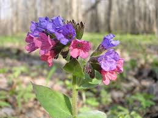
Pulmonaria mjekësore,
Përdorimi: Përdoret si çaj në pastrimin e mushkërive nga këlbaza dhe kundër
hemorroideve.
|
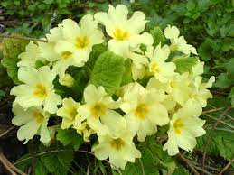
Aguliçe e vërtetë,
Përdorimi: Lulet dhe rrënjët përdorën si ekspektorant në shërimin e bronkitisit, kollit,
nga myku, të ftohurit dhe pezmatimi i hundës e fytit.
|
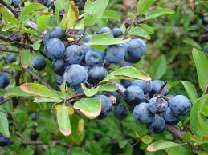
Boronica
Përdorimi:Gjethet përdoren për shërimin e kollit dhe diabetit, kurse fruti ka shumë
antociana që kanë efekt antioksidativ, kundër gjakderdhjeve, në trajtimin e mukozës së gojës,
fytit, lukthit, et
|
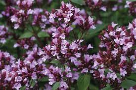
Krasta e zakonshme
Përdorimi: Bimë që pëdoret mjaft kundër ftohjes dhe inflamacioneve të rrugëve të frymëmarrjes.
|
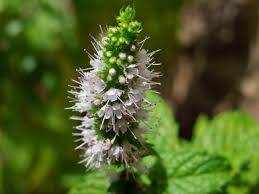
Heraqina mjekësore
Përdorimi: Rrënjët përdoren për shërimin e sistemit nervor, epilepsisë, nervozave, lukthit,
ritmit të zemrës, rritjen e oreksit, pastrimin e gjakut.
|
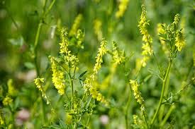
Bari i peshkut
Përdorimi: Lulet përdoren në trajtimin e rrugëve të frymëmarrjes, bronkitisit,
mushkërive, astmës si dhe në shërimin e sëmundjeve të lëkurës.
|